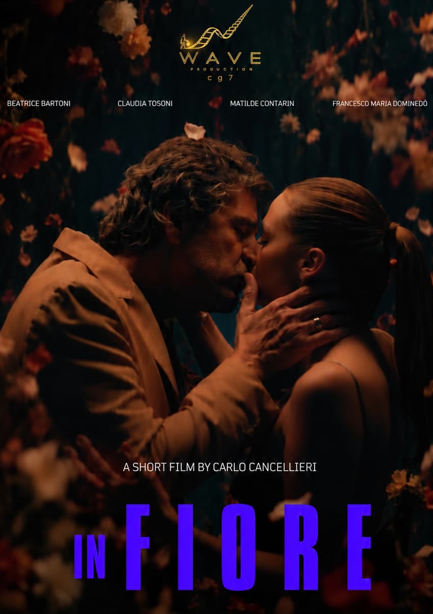
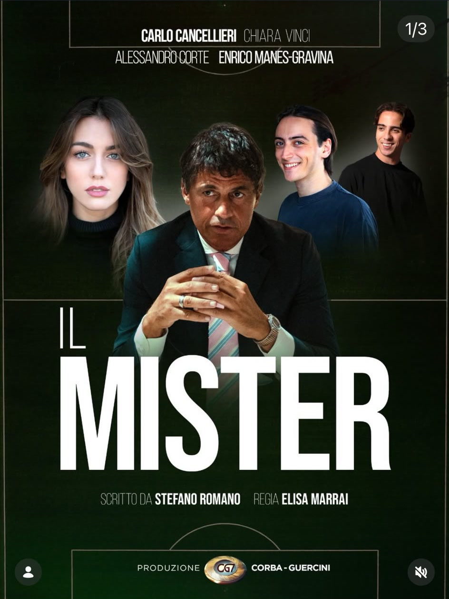
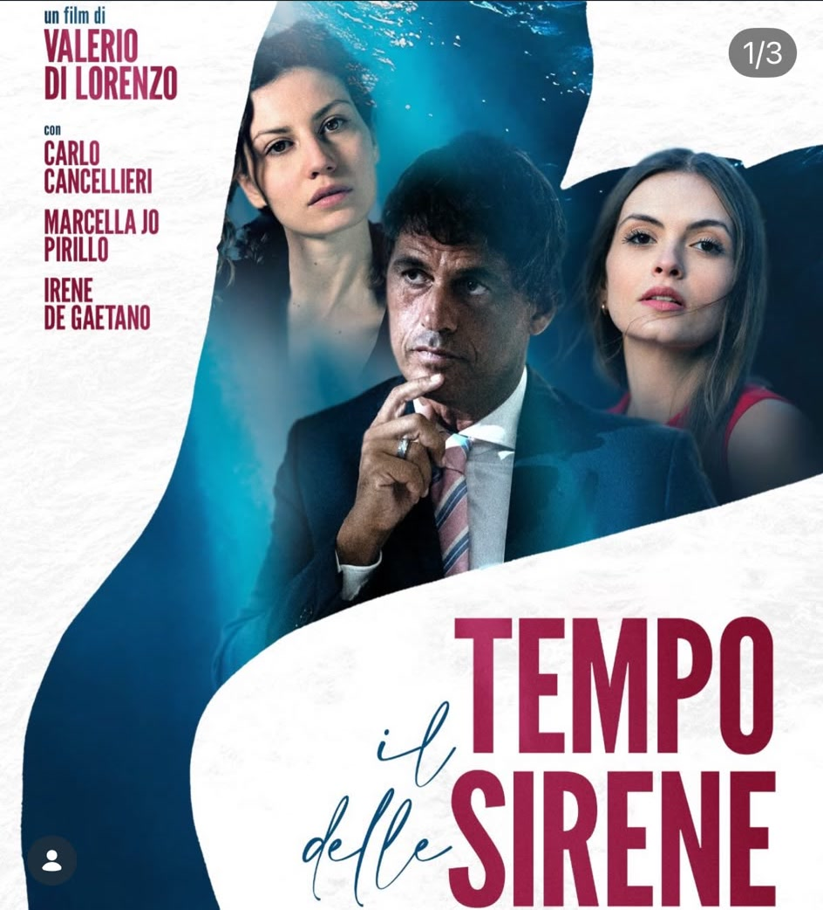
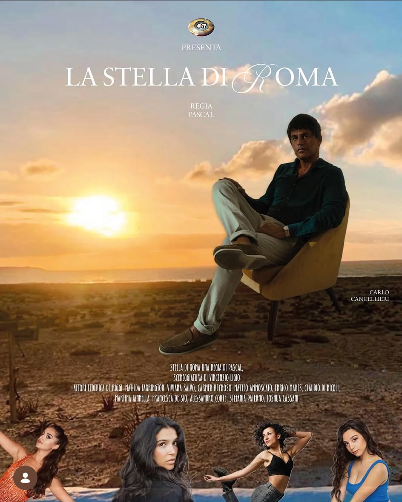
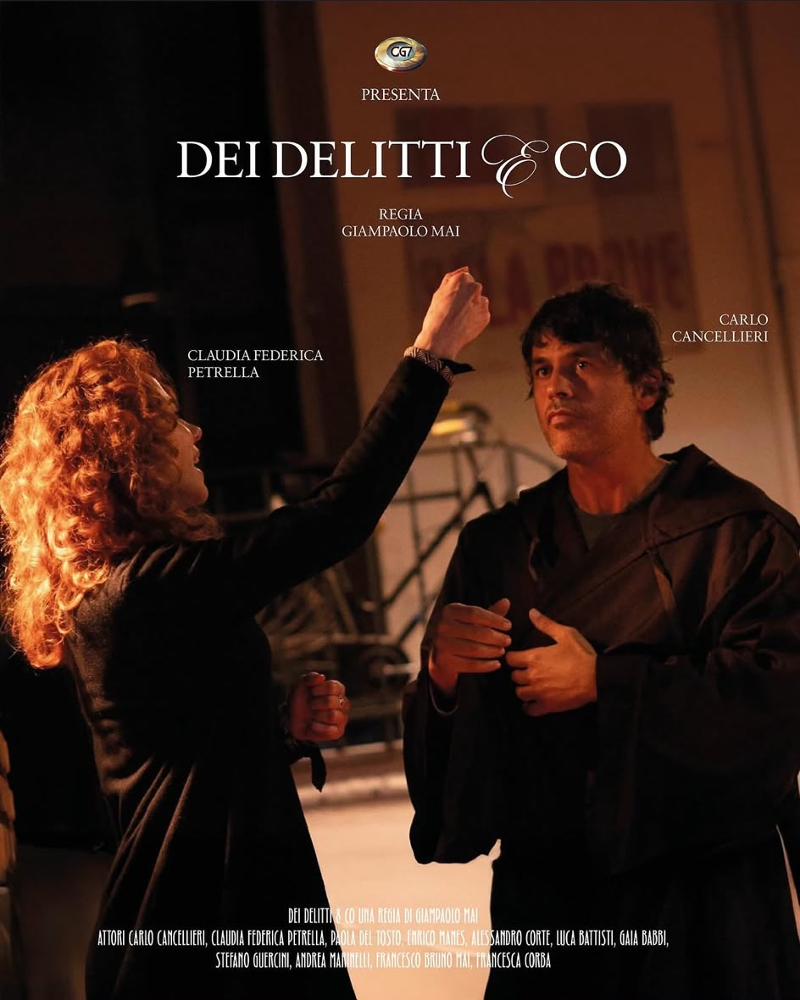
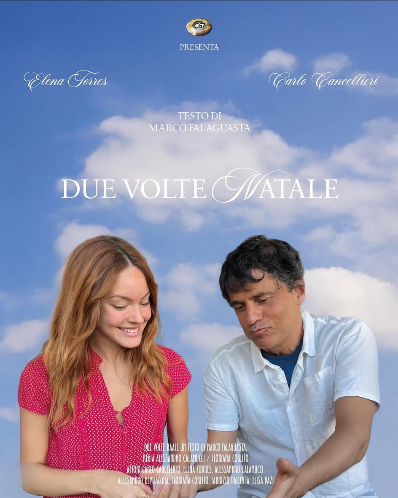
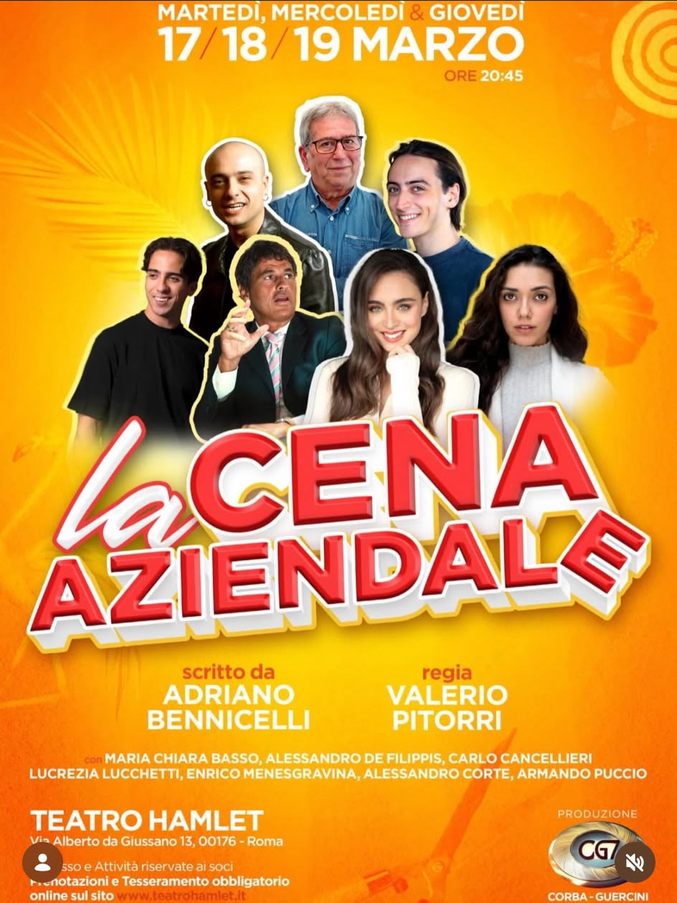
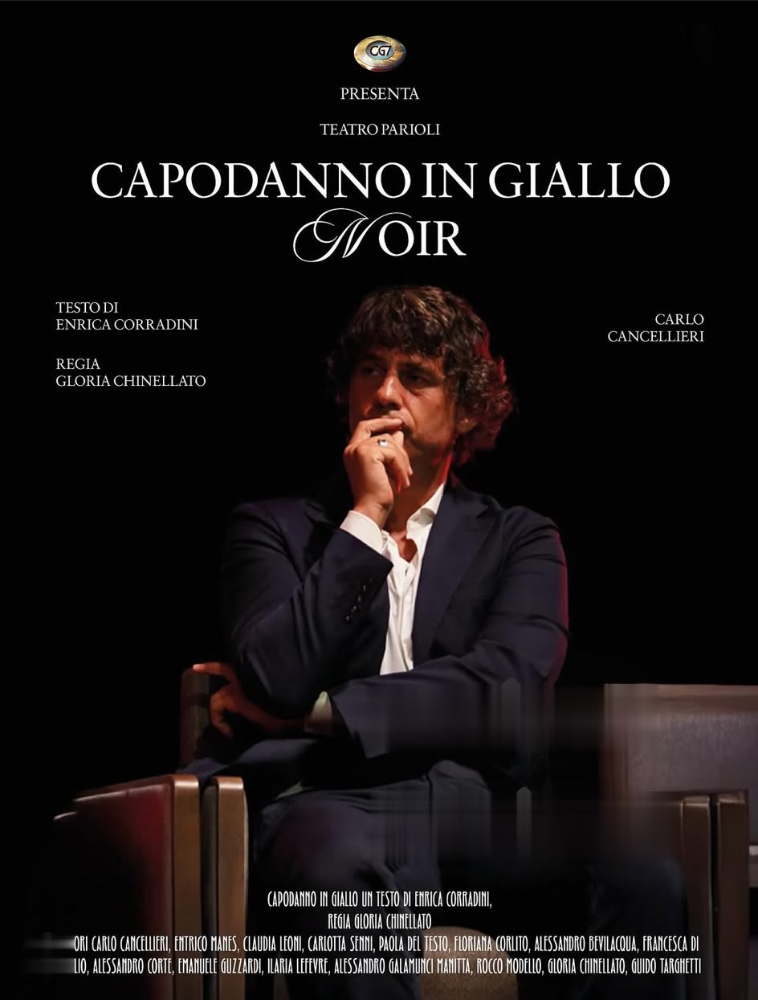

Storie brevi, girate con cura, per chi le guarda fino all'ultimo fotogramma.
Wave Production, sigla CG7, produce cortometraggi e porta in scena film e spettacoli teatrali.
Cortometraggio
In fiore
Un film di Carlo Cancellieri
Con Beatrice Bartoni, Claudia Tosoni, Matilde Contarin e Francesco Maria Dominedò.
Altri lavori
Scorri di lato






